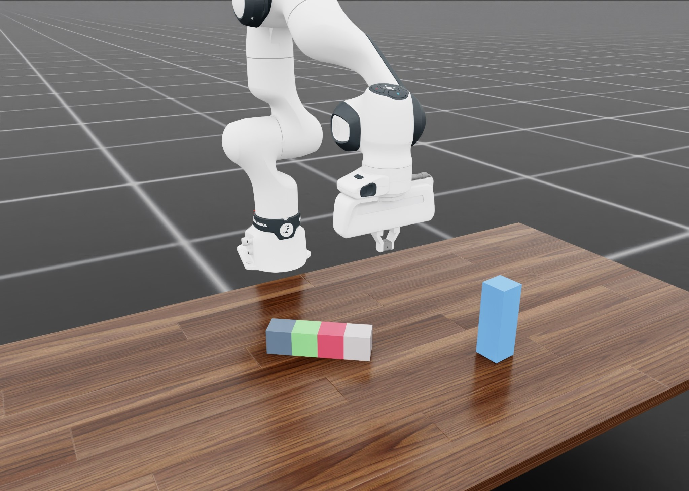
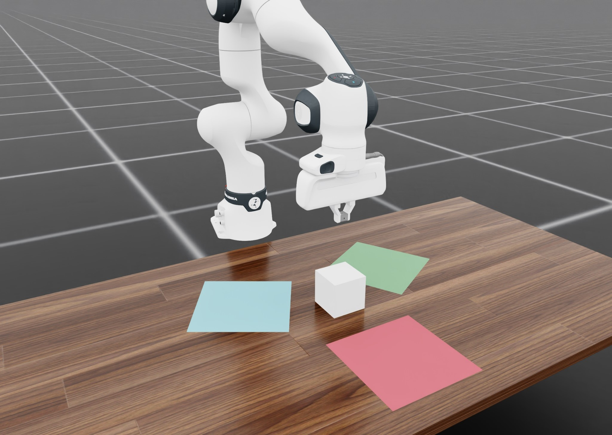
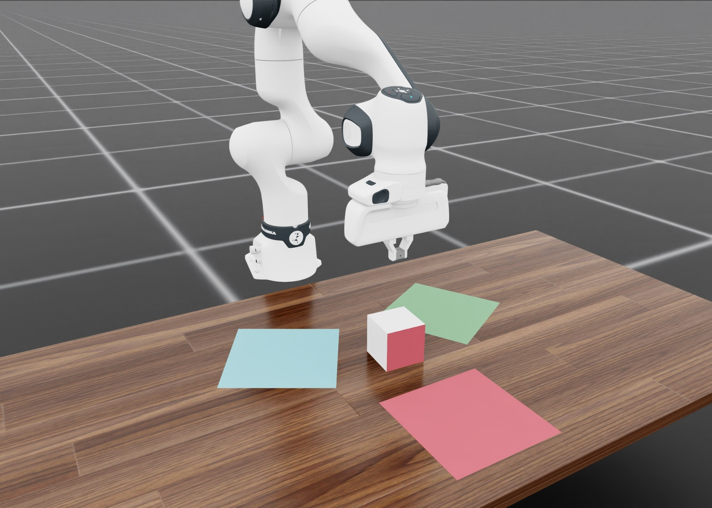
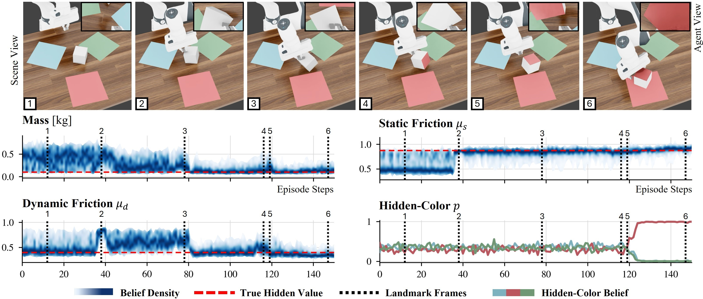
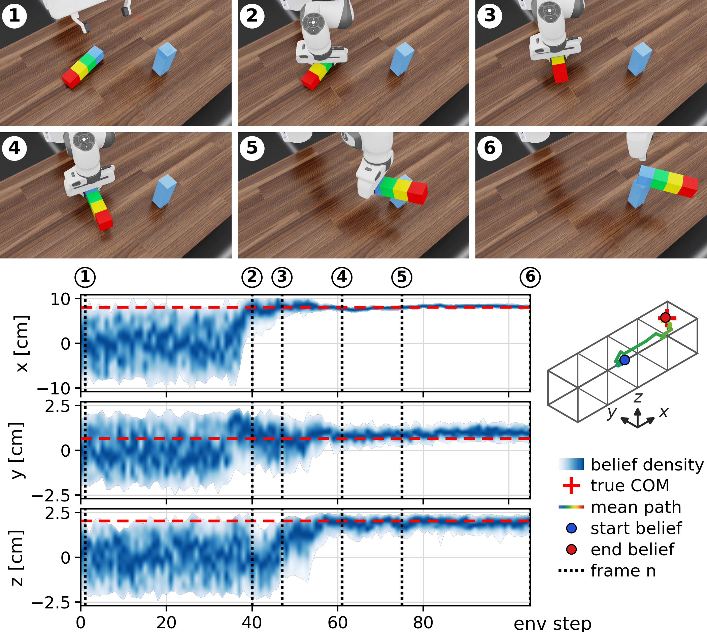

Privileged supervision
The simulator supervises the actor's belief over task-relevant hidden physical parameters.
Robotics · Manipulation · Belief Learning
Simulator-Supervised Belief Flow (SSB-Flow) trains a partially observing robotic policy to infer task-relevant physical quantities from interaction history, using image and proprioceptive observations to guide informative manipulation.
belief_state ← posterior(samples | history)
policy(a | obs, belief_state)
objective ← task reward + belief supervisionHidden physical properties, such as mass and friction, substantially affect how a robot can optimally manipulate objects. A privileged teacher directly accesses these properties, so its actions generally do not demonstrate how to acquire missing information, creating a mismatch for a partially-observing learner, which does not observe the privileged state during training or deployment.
We instead use a simulator to simultaneously supervise a learned approximation to the belief state and train a policy conditioned on that approximation by reinforcement learning. Our method, Simulator-Supervised Belief Flow (SSB-Flow), learns a sampleable posterior over task-relevant physical quantities from interaction history, using high-dimensional image input alongside proprioceptive input. The policy consumes an encoding of posterior samples, allowing it to use estimated uncertainty when selecting actions.
We compare SSB-Flow to three student-teacher approaches originally designed to use privileged information, as well as a strong recurrent RL baseline. Across four challenging manipulation tasks, SSB-Flow achieves the highest success rate on every task, averaging 93.1% versus 64.7% for the strongest alternative, an absolute gap of 28.4%. These results support supervising physical-state inference as an effective use of privileged information for partially observed manipulation.
The simulator supervises the actor's belief over task-relevant hidden physical parameters.
SSB-Flow's flow-matching posterior approximates the full multimodal belief.
The policy conditions on posterior samples to exploit uncertainty when choosing actions.



Average success rate across four manipulation tasks — a +28.4 point absolute gap.

